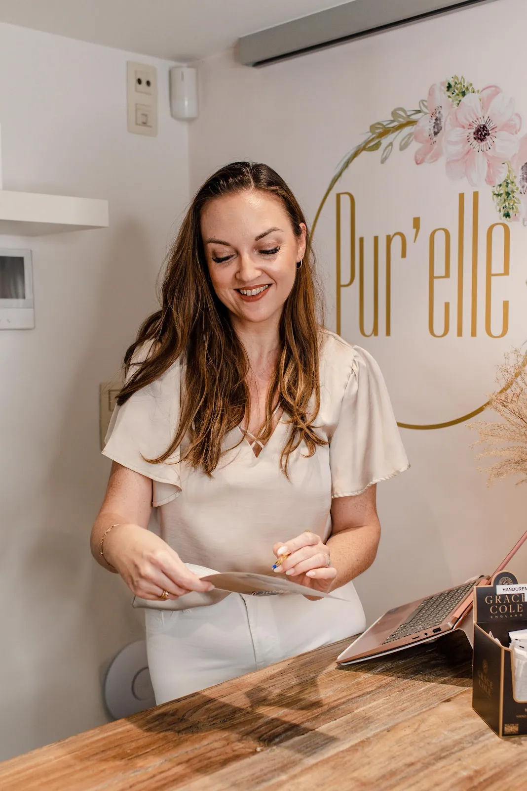
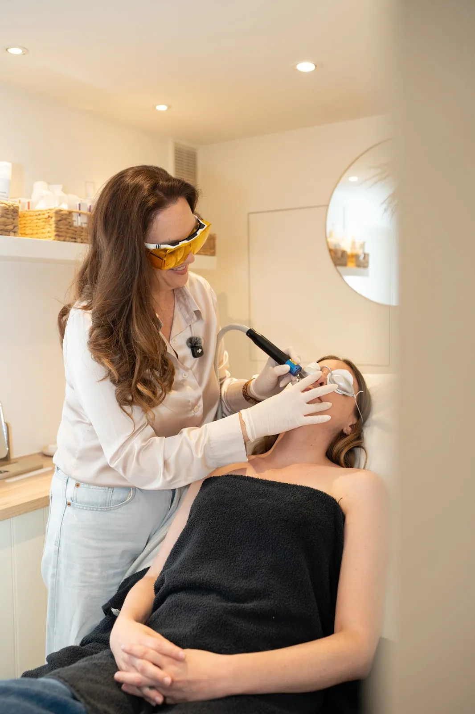
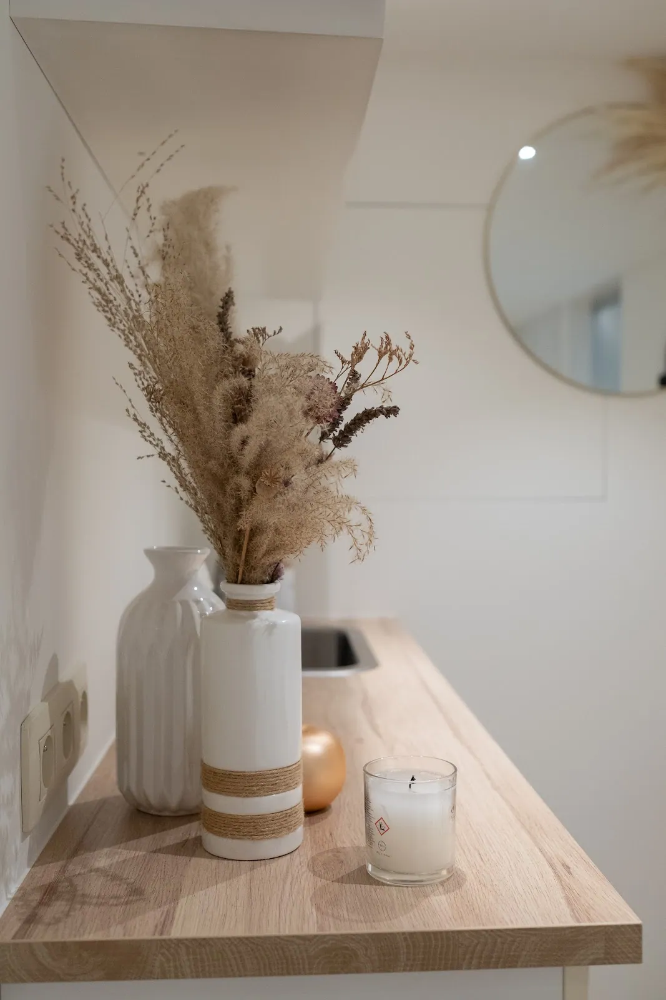
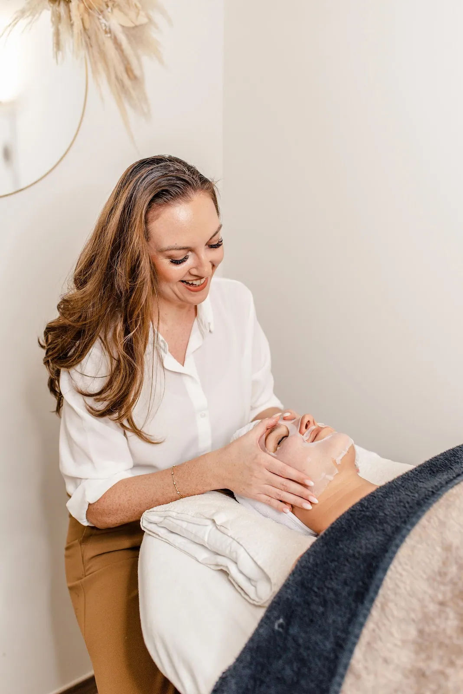
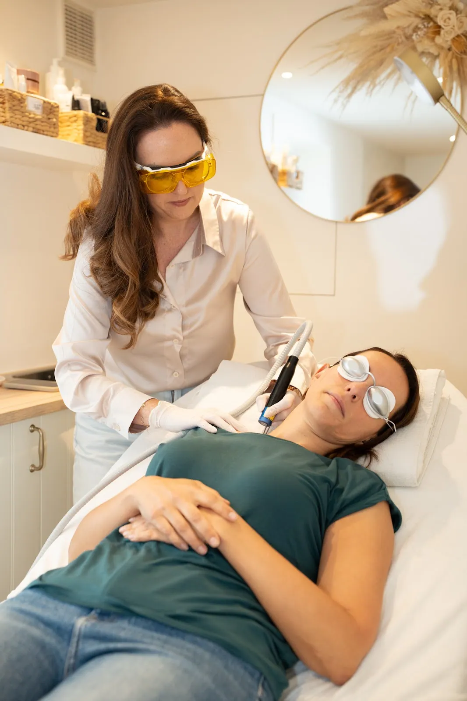
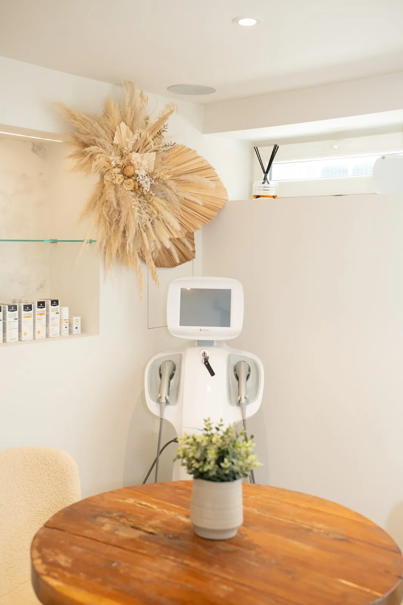
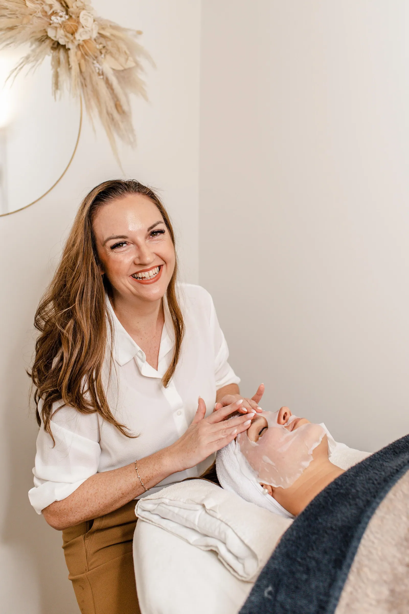
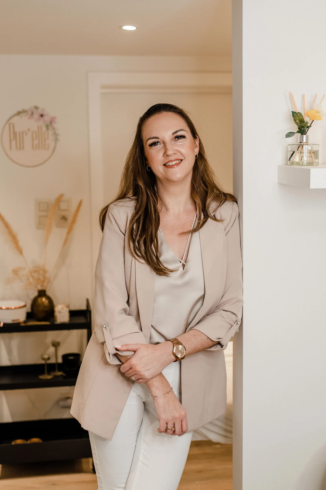
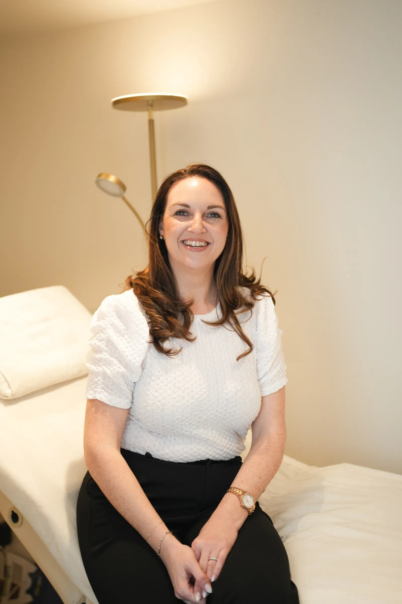

Start
Huidanalyse
Samen kijken wat je huid nodig heeft. Kan ook online, met advies op maat via SkinBoost.
Plan je analysePigmentvlekken, roodheid, een onrustige huid of haartjes die je beu bent. Lien werkt gericht en eerlijk: eerst kijken wat je huid echt nodig heeft, pas dan behandelen. Soms is het antwoord minder producten in plaats van meer.

Lien, huidexpert. Gespecialiseerd in pigment, roodheid en huidoneffenheden met laser.

Kies wat je herkent en lees hoe Lien het aanpakt. Geen standaardbehandelingen, wel een plan dat vertrekt vanuit jouw huid.
Je mag er meerdere aanduiden.
Vlekken die maar niet weggaan, van de zon, van hormonen of gewoon met de jaren. Lien bekijkt eerst wat voor pigment het is en hoe diep het zit, en behandelt het dan gericht met laser. Thuis krijg je de juiste verzorging mee, en zeker een goede zonnecrème.
Bij Pur'elle draait het niet om zoveel mogelijk behandelingen, maar om wat jouw huid echt vooruit helpt.
Samen kijken wat je huid nodig heeft. Kan ook online, met advies op maat via SkinBoost.
Plan je analyse
Huidverbeterende gelaatsbehandelingen voor een huid die weer straalt. Ontspannen en gericht tegelijk.
Afspraak vragen
Lien's specialisatie: pigment, roodheid en storende huidoneffenheden, gericht behandeld.
Afspraak vragen
Huidversteviging voor gezicht en lichaam, zonder naald en zonder downtime.
Meer over HIFUProfessionele laserontharing, met evenveel zorg en aandacht als elke andere behandeling.
Afspraak vragen
Wenkbrauwen die er 's morgens al staan, met oog voor een natuurlijk resultaat.
Afspraak vragenHIFU werkt met gefocuste ultrageluidsgolven die diep in de huid warmte geven. Daardoor gaat je huid zelf nieuw collageen aanmaken, en wordt ze stap voor stap steviger.
Je kan meteen verder met je dag. Lien bekijkt eerst of HIFU voor jou de juiste keuze is, en zegt het ook eerlijk als dat niet zo is.


Lien is huidexpert. Bij haar zal je nooit horen dat haar producten de beste zijn, of dat je iets absoluut moet doen. Ze wil dat jij je goed voelt bij elke stap die je zet, en daar 100 procent achter staat.
Soms betekent dat ook dat een paar producten uit je badkamer gewoon weg mogen. Het doel is geen perfecte huid, maar een gezonde huid waar je je weer goed in voelt, met of zonder make-up.
Zorgen voor jezelf is geen luxe. Het is iets wat je verdient.
Maak kennis met Lien“Lien nam de tijd om te luisteren en te kijken naar wat mijn huid echt nodig had. Geen sluwe verkooppraatjes voor dure producten”
“Een dikke drie jaar geleden kwam ik voor de eerste keer langs bij Lien van Pur’elle voor een SuperBoost behandeling en sindsdien is dit mijn driemaandelijkse me-time momentje. Lien zoekt steeds naar de juiste behandeling om mijn huid terug te doen stralen.”
“Pas toen ik een volledige analyse liet uitvoeren bij Lien begreep ik dat ik een erg droge huid had en ik dus die ook helemaal anders moest behandelen.”
| Maandag | 9:00 - 21:00 |
| Dinsdag | 9:00 - 18:00 |
| Woensdag | Op afspraak |
| Donderdag | 9:00 - 20:00 |
| Vrijdag | 9:00 - 15:00 |
| Zaterdag | 9:00 - 14:00 |
| Zondag | Gesloten |
DIEen woordje uitleg van Stijn
Ik maakte deze demo voor jullie om te tonen wat er kan. Na een kort gesprek maak ik er iets veel persoonlijkers van, helemaal naar jullie wens.
Vrijblijvend. Ik kom langs of we bellen.
Op maat, op jullie eigen domein.
Geen voorschot. Jullie betalen pas als alles klaar is.
Hosting, domeinnaam en kleine wijzigingen, zoals nieuwe openingsuren.
Omdat een voorbeeld meer zegt dan een mail. Zo zien jullie meteen wat er kan, en het kost jullie niets.
Nee. Het gesprek is vrijblijvend. Vinden jullie het niks, dan is het daarmee gedaan.
Na ons gesprek staat jullie site binnen 10 tot 14 dagen online.
Zeker. Jullie domeinnaam kan gewoon blijven, de nieuwe site komt in de plaats van de oude.
Nee, dat doe ik op basis van ons gesprek. Eigen foto's zijn mooi meegenomen, maar niet nodig om te starten.